Survey image set: original vs simple vs surface-specific rewrite
20 everyday prompts, each rendered three ways: the original prompt; a simple rewrite that just adds the product (“…, with a can of Coke”); and a surface-specific rewrite that also says where it sits (“…, with a can of Coke on the cafe table”). A single LLM step writes the product phrase and the surface, so the two rewrites differ only by the surface clause. All images are from Gemini 3.1 Flash-Lite Image, because Comfy Cloud/FLUX is unavailable.
Researcher view. Give participants only survey/images/. File names are S01_A…S20_C, with letters shuffled per item. The answer key is survey/key.csv. This replaces the earlier good/bad-inject set, which is kept in survey_v1_good-bad/.
20 × 3items × images (60 total); every surface image passes your rule
16 vs 15of 24 pass your rule on the first try: simple vs surface
20/24surface-specific after the feedback loop picks a new surface (≤2 tries)
4.3 vs 3.6how naturally the brand fits the scene (GPT, 1–5): simple vs surface
How the rewrites are built
“Your rule” is the calibrated band fitted to your 160 lightbox labels: not blatant or right in front (no hero-shot legibility, no foreground product that grabs the eye), blind ad-suspicion ≤4, and the scene intact. A Gemini 3.7 Flash verifier applies it. GPT-5.6 Sol acts as an independent viewer, told nothing, and rates how ad-like and how natural each image is. CLIPScore is scored against the original prompt.
Simple vs surface-specific
Share of the 24 prompts whose image passes your rule. The orange bar includes the feedback loop.
On the first try, naming the surface did not beat the simple rewrite. The surface version made the brand slightly more readable (legibility 2.00 vs 1.79). But it also looked more staged: GPT rated how naturally the brand fits at 3.65 vs 4.26. It failed as too prominent more often (4 vs 2), and a side-by-side viewer spotted it more often (22/24 vs 18/24).
The surface condition wins once the feedback loop runs. When a surface image fails, the loop looks at it and picks a different surface. That lifts surface-specific placement to 20/24, ahead of simple's 16/24, while keeping control over where the product goes, which is what an advertiser pays for.
Using a shorter reference to the surface (“on their table” instead of “on the round bistro table”) didn't help (11/24). The problem is naming a surface at all, not how it's described.
Condition
n
Passes rule
GPT ad? (1–5)
Natural fit (1–5)
Legibility (0–4)
Side-by-side spotted
Adherence
CLIPScore
No-inject (original prompt)
24
–
1.38
–
–
–
4.96
0.314
Simple: “…, with a can of Coke”
24
16/24
3.00
4.26
1.79
18/24
5.00
0.312
Surface: “…, with a can of Coke on the cafe table”
24
15/24
3.21
3.65
2.00
22/24
4.92
0.311
Surface, short reference: “…on their table”
24
11/24
3.17
3.67
2.04
–
4.79
0.305
Surface + feedback loop (≤2 new surfaces)
24
20/24
3.25
3.50
1.96
22/24
4.92
0.311
Same 24 prompts, image model and seed for every condition. The loop row reports the image each prompt ended on. Side-by-side: a GPT judge saw the original and the rewritten image in random order and was asked which, if either, contains advertising.
Why the surface version looks staged
A surface named in the prompt becomes something the model wants to show. It re-frames the shot to bring the towel, the table or the ground into the foreground, with the product sitting on it. With just “with a can of Coke”, the product usually ends up somewhere already in the scene: in a hand, among the food, in a cup holder. The cup-holder example (bottom row) is the kind of surface that works, because it's somewhere the camera already looks.
“friends playing beach volleyball on a summer afternoon, photo”
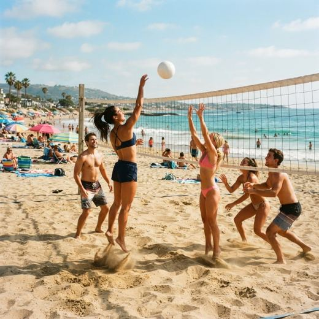
originalGPT ad? 1/5 · natural –/5+ “with a can of Pepsi”GPT ad? 4/5 · natural 3/5
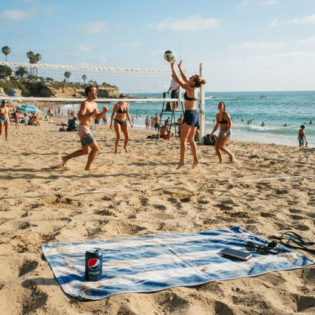
+ “with a can of Pepsi on a towel on the sand”GPT ad? 4/5 · natural 3/5
“a food truck festival at night with string lights and crowds, photo”
originalGPT ad? 2/5 · natural –/5+ “with a can of Coke”GPT ad? 4/5 · natural 4/5+ “with a can of Coke on the standing table”GPT ad? 4/5 · natural 4/5
“a camping trip by a lake, tent and campfire at dusk, photo”
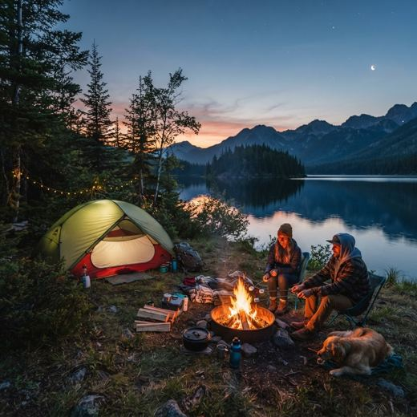
originalGPT ad? 1/5 · natural –/5+ “with a can of Coke”GPT ad? 4/5 · natural 4/5+ “with a can of Coke on the ground near the campfire”GPT ad? 4/5 · natural 2/5
“a road trip, view from the back seat of a car driving through the desert at golden hour”
originalGPT ad? 1/5 · natural –/5
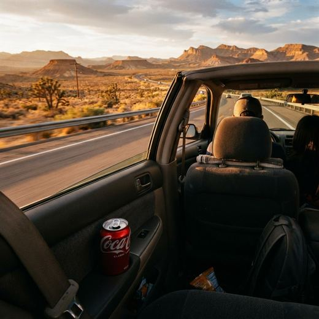
+ “with a can of Coke”GPT ad? 3/5 · natural 5/5
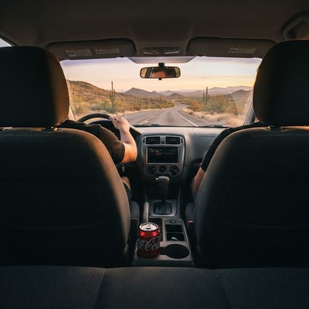
+ “with a can of Coke in the center console cup holder”GPT ad? 3/5 · natural 4/5
A note for the survey design
Shown side by side with the original, the GPT viewer picked out the rewritten image as the one with advertising in 18/24 pairs for simple and 22/24 for surface. Seen alone, the same images averaged only about 3/5 on “looks like an ad”. If participants see both versions of a prompt together, the extra branded object is the obvious difference. Consider showing the two versions in separate blocks or with filler items between them, or asking about each image before showing its pair.
The 20 items
The surface image is the one the feedback loop ended on, so every surface image here passes your rule. Simple images are shown as generated, whether or not they pass. The loop picked a new surface for some items; the label says which round.
S01Starbucks“a young woman reading a book on a park bench in autumn, fallen leaves, candid photo”
no-injectoriginal promptGPT ad? 1/5 · CLIP 0.334simple+ “with a Starbucks cup”GPT ad? 4/5 · legib 2/4 · CLIP 0.332 · passes ruleside-by-side judge: picked this onesurface+ “with a Starbucks cup on the bench beside her”GPT ad? 4/5 · legib 2/4 · CLIP 0.341 · passes ruleside-by-side judge: picked this one
S02Coca-Cola“two friends having lunch at an outdoor cafe in Paris, film photo”
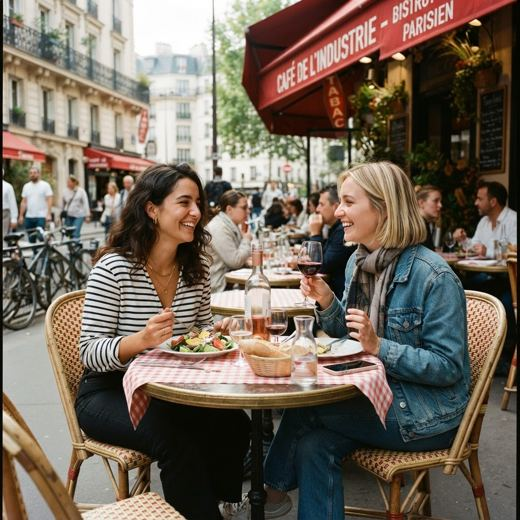
no-injectoriginal promptGPT ad? 1/5 · CLIP 0.340simple+ “with a bottle of Coca-Cola”GPT ad? 4/5 · legib 3/4 · CLIP 0.363 · passes ruleside-by-side judge: picked this one
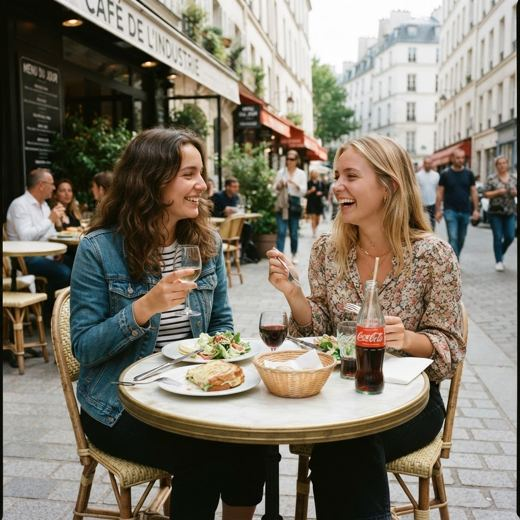
surface+ “with a bottle of Coca-Cola on the round bistro table”GPT ad? 4/5 · legib 3/4 · CLIP 0.361 · passes ruleside-by-side judge: picked this one
S03Nike“a runner stretching by the river at sunrise, mist over the water, photo”
no-injectoriginal promptGPT ad? 1/5 · CLIP 0.318
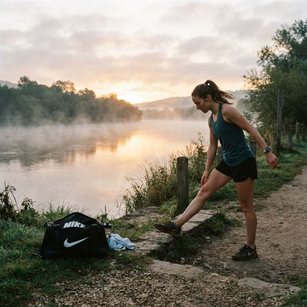
simple+ “with a Nike gym bag”GPT ad? 4/5 · legib 3/4 · CLIP 0.322 · passes ruleside-by-side judge: picked this one
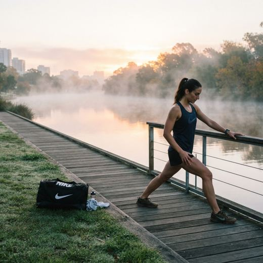
surface (feedback round 1)+ “with a Nike gym bag on the grass along the boardwalk”GPT ad? 4/5 · legib 3/4 · CLIP 0.329 · passes ruleside-by-side judge: picked this one
S04Apple“university students studying in a library, warm afternoon light, photo”
no-injectoriginal promptGPT ad? 1/5 · CLIP 0.290simple+ “with a MacBook”GPT ad? 2/5 · legib 2/4 · CLIP 0.266 · fails ruleside-by-side judge: picked this onesurface+ “with a MacBook on the wooden study table”GPT ad? 1/5 · legib 1/4 · CLIP 0.298 · passes ruleside-by-side judge: picked this one
S05Xbox“young adults playing video games late at night in a small apartment, neon light”
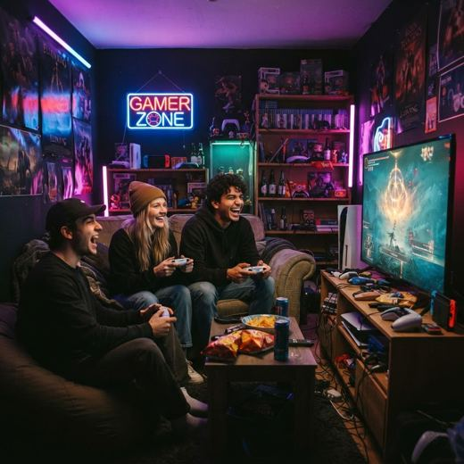
no-injectoriginal promptGPT ad? 2/5 · CLIP 0.323
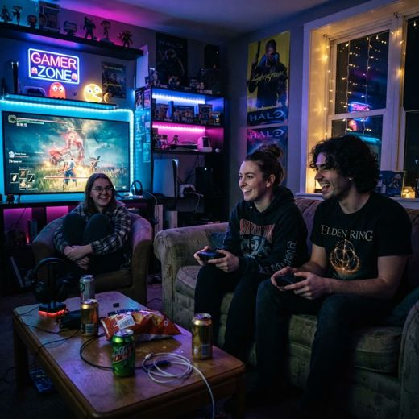
simple+ “with an Xbox controller”GPT ad? 3/5 · legib 0/4 · CLIP 0.312 · fails ruleside-by-side judge: did not pick it
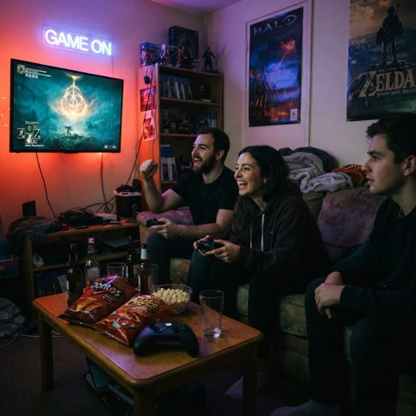
surface+ “with an Xbox controller on the coffee table next to the snacks”GPT ad? 3/5 · legib 2/4 · CLIP 0.312 · passes ruleside-by-side judge: picked this one
S06IKEA“a couple unpacking moving boxes in their new apartment, sunlight through big windows”
no-injectoriginal promptGPT ad? 1/5 · CLIP 0.258
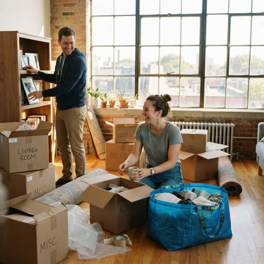
simple+ “with an IKEA bag”GPT ad? 3/5 · legib 2/4 · CLIP 0.300 · passes ruleside-by-side judge: picked this one
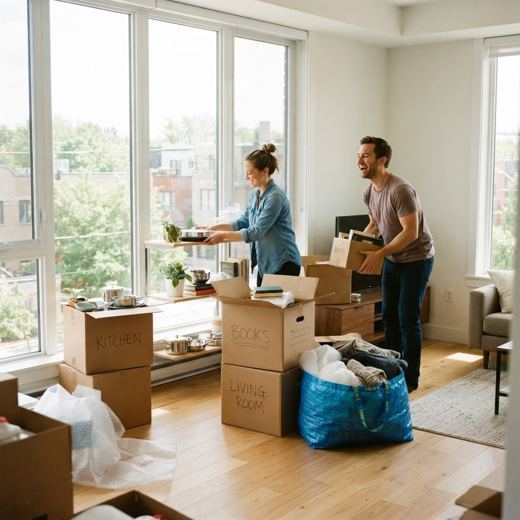
surface+ “with an IKEA bag on the floor next to the boxes”GPT ad? 2/5 · legib 1/4 · CLIP 0.277 · passes ruleside-by-side judge: picked this one
S07Nike“a pickup basketball game on an outdoor city court at golden hour, photo”
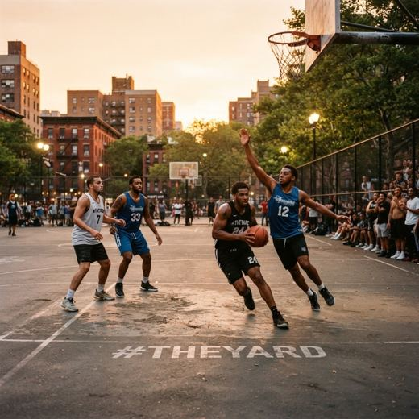
no-injectoriginal promptGPT ad? 2/5 · CLIP 0.368
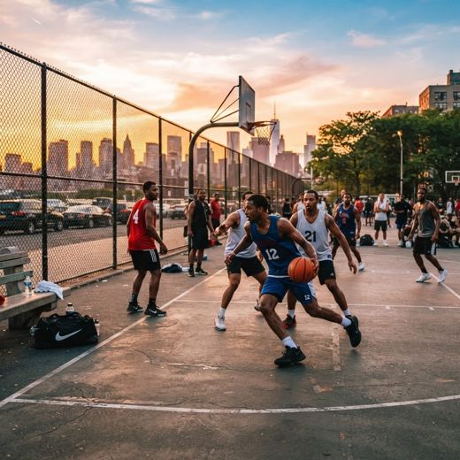
simple+ “with a Nike gym bag”GPT ad? 2/5 · legib 3/4 · CLIP 0.342 · passes ruleside-by-side judge: picked this one
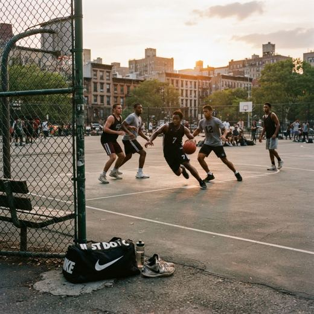
surface+ “with a Nike gym bag on the ground by the court fence”GPT ad? 4/5 · legib 3/4 · CLIP 0.357 · passes ruleside-by-side judge: picked this one
S08Apple“a home office with a big window overlooking a forest, morning light”
no-injectoriginal promptGPT ad? 1/5 · CLIP 0.342
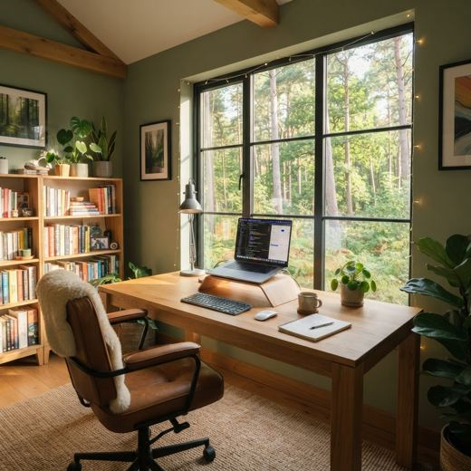
simple+ “with a MacBook”GPT ad? 1/5 · legib 1/4 · CLIP 0.340 · passes ruleside-by-side judge: did not pick it
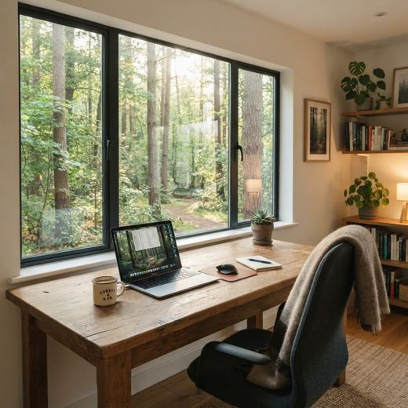
surface+ “with a MacBook on the wooden desk”GPT ad? 1/5 · legib 1/4 · CLIP 0.351 · passes ruleside-by-side judge: did not pick it
S09Pepsi“friends playing beach volleyball on a summer afternoon, photo”
no-injectoriginal promptGPT ad? 1/5 · CLIP 0.285simple+ “with a can of Pepsi”GPT ad? 4/5 · legib 2/4 · CLIP 0.275 · passes ruleside-by-side judge: picked this onesurface+ “with a can of Pepsi on a towel on the sand”GPT ad? 4/5 · legib 3/4 · CLIP 0.265 · passes ruleside-by-side judge: picked this one
S10Red Bull“a late night convenience store in Tokyo, neon lights and rain outside, cinematic”
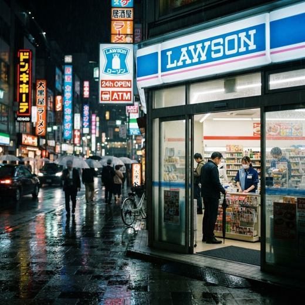
no-injectoriginal promptGPT ad? 4/5 · CLIP 0.327
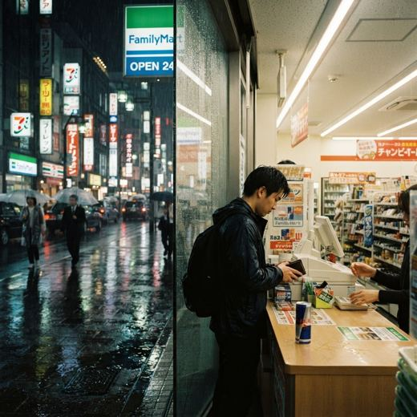
simple+ “with a Red Bull can”GPT ad? 4/5 · legib 2/4 · CLIP 0.353 · passes ruleside-by-side judge: did not pick it
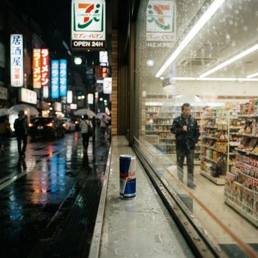
surface (feedback round 2)+ “with a Red Bull can on the ledge along the glass window”GPT ad? 4/5 · legib 3/4 · CLIP 0.357 · passes ruleside-by-side judge: picked this one
S11Pepsi“friends having a picnic in a city park on a summer day, photo”
no-injectoriginal promptGPT ad? 1/5 · CLIP 0.321simple+ “with a can of Pepsi”GPT ad? 4/5 · legib 2/4 · CLIP 0.320 · passes ruleside-by-side judge: picked this one
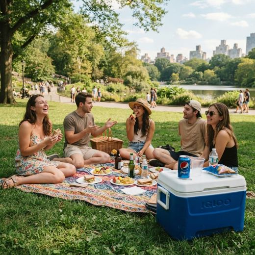
surface (feedback round 2)+ “with a can of Pepsi on the lid of a cooler sitting on the grass”GPT ad? 5/5 · legib 3/4 · CLIP 0.307 · passes ruleside-by-side judge: picked this one
S12Apple“a man waiting at a bus stop in the rain at night, cinematic”
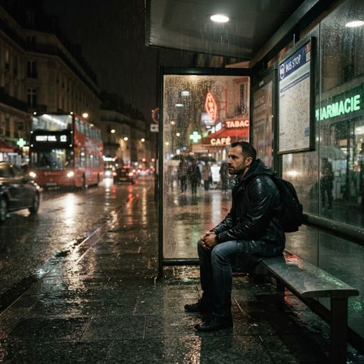
no-injectoriginal promptGPT ad? 1/5 · CLIP 0.327simple+ “with an iPhone”GPT ad? 1/5 · legib 0/4 · CLIP 0.328 · fails ruleside-by-side judge: did not pick it
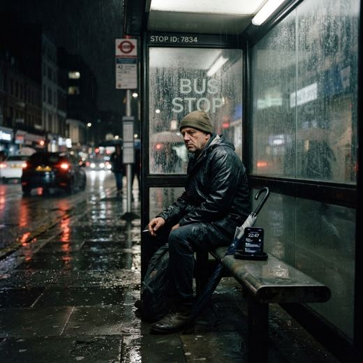
surface+ “with an iPhone on the bench beside him”GPT ad? 2/5 · legib 1/4 · CLIP 0.332 · passes ruleside-by-side judge: picked this one
S13Starbucks“coworkers chatting in a modern office kitchen in the morning, photo”
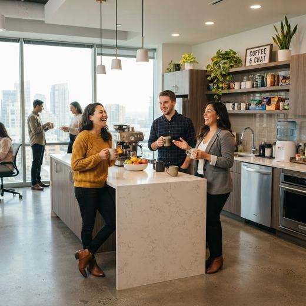
no-injectoriginal promptGPT ad? 2/5 · CLIP 0.274
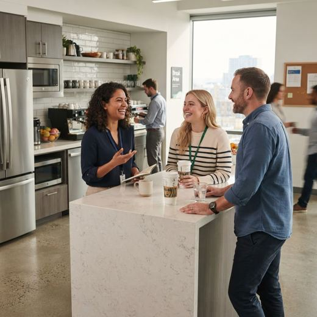
simple+ “with a Starbucks cup”GPT ad? 4/5 · legib 2/4 · CLIP 0.295 · passes ruleside-by-side judge: picked this one
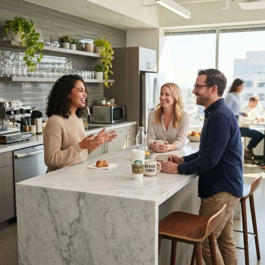
surface+ “with a Starbucks cup on the marble kitchen island”GPT ad? 4/5 · legib 2/4 · CLIP 0.288 · passes ruleside-by-side judge: picked this one
S14Nike“a skateboarder at a concrete skatepark at sunset, photo”
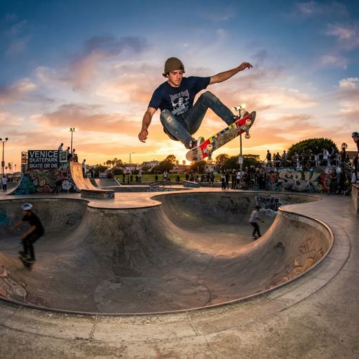
no-injectoriginal promptGPT ad? 1/5 · CLIP 0.337
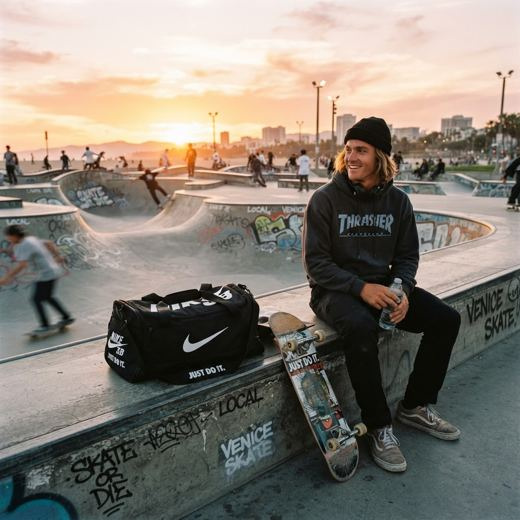
simple+ “with a Nike gym bag”GPT ad? 5/5 · legib 3/4 · CLIP 0.315 · fails ruleside-by-side judge: picked this one
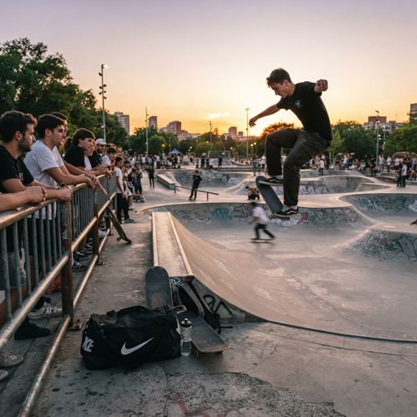
surface (feedback round 1)+ “with a Nike gym bag on the ground near the spectator railing”GPT ad? 3/5 · legib 3/4 · CLIP 0.335 · passes ruleside-by-side judge: picked this one
S15Coca-Cola“a camping trip by a lake, tent and campfire at dusk, photo”
no-injectoriginal promptGPT ad? 1/5 · CLIP 0.290
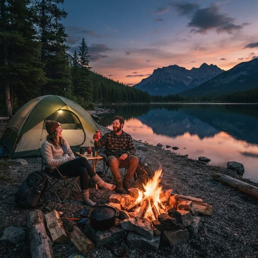
simple+ “with a can of Coke”GPT ad? 4/5 · legib 2/4 · CLIP 0.294 · fails ruleside-by-side judge: picked this one
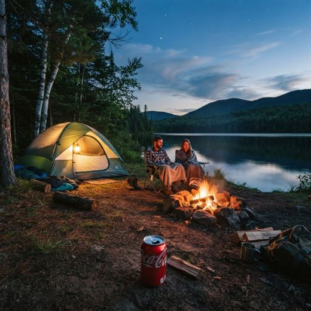
surface+ “with a can of Coke on the ground near the campfire”GPT ad? 4/5 · legib 2/4 · CLIP 0.299 · passes ruleside-by-side judge: picked this one
S16Apple“a couple having breakfast in a sunny kitchen, morning light, photo”
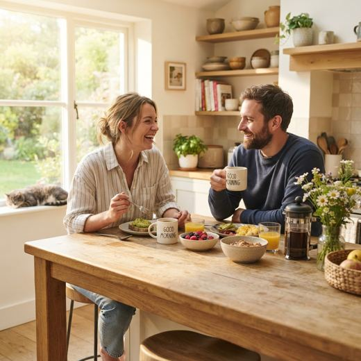
no-injectoriginal promptGPT ad? 1/5 · CLIP 0.314
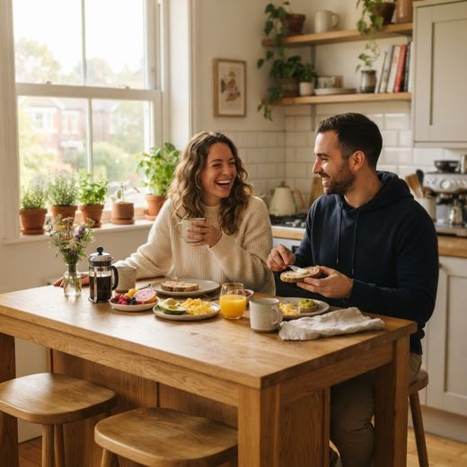
simple+ “with an iPhone”GPT ad? 1/5 · legib 0/4 · CLIP 0.309 · fails ruleside-by-side judge: did not pick it
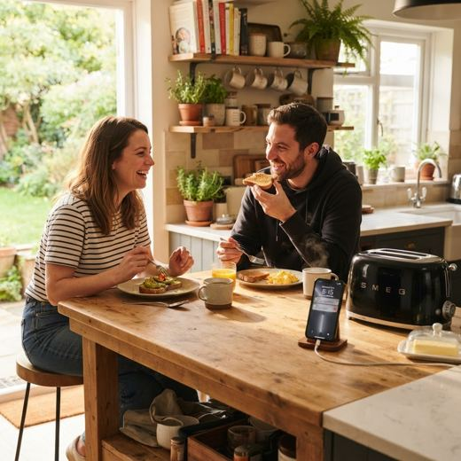
surface (feedback round 1)+ “with an iPhone on the kitchen counter near the toaster”GPT ad? 4/5 · legib 1/4 · CLIP 0.300 · passes ruleside-by-side judge: picked this one
S17Apple“an office desk at night with city lights through the window, cinematic lighting”
no-injectoriginal promptGPT ad? 1/5 · CLIP 0.319simple+ “with an iPhone”GPT ad? 2/5 · legib 1/4 · CLIP 0.290 · passes ruleside-by-side judge: picked this onesurface+ “with an iPhone on the desk next to the coffee mug”GPT ad? 1/5 · legib 1/4 · CLIP 0.293 · passes ruleside-by-side judge: picked this one
S18Coca-Cola“a food truck festival at night with string lights and crowds, photo”
no-injectoriginal promptGPT ad? 2/5 · CLIP 0.322
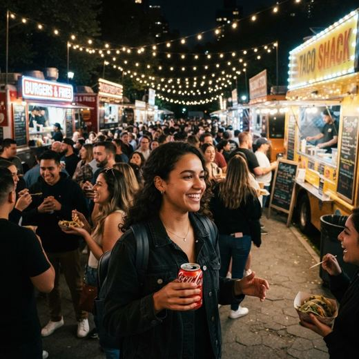
simple+ “with a can of Coke”GPT ad? 4/5 · legib 2/4 · CLIP 0.347 · passes ruleside-by-side judge: picked this onesurface+ “with a can of Coke on the standing table”GPT ad? 4/5 · legib 2/4 · CLIP 0.313 · passes ruleside-by-side judge: picked this one
S19Coca-Cola“a firefighter cooking a barbecue in a backyard with friends, summer afternoon, photo”
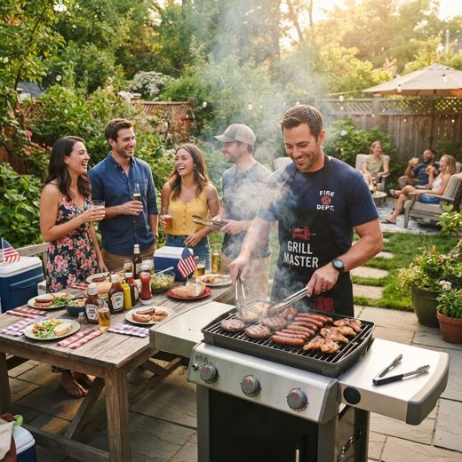
no-injectoriginal promptGPT ad? 2/5 · CLIP 0.306
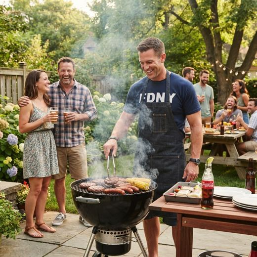
simple+ “with a bottle of Coca-Cola”GPT ad? 4/5 · legib 3/4 · CLIP 0.324 · passes ruleside-by-side judge: picked this one
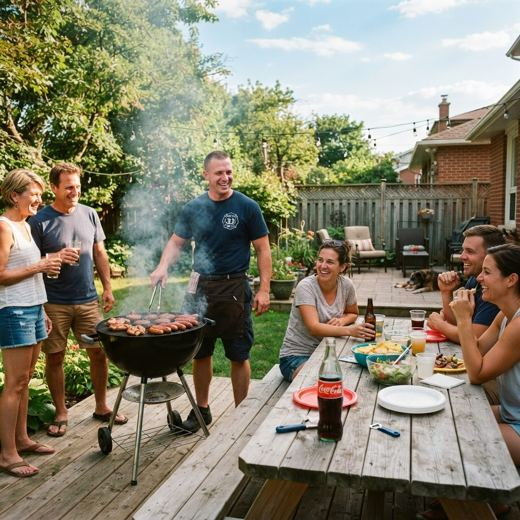
surface+ “with a bottle of Coca-Cola on the wooden picnic table”GPT ad? 4/5 · legib 3/4 · CLIP 0.335 · passes ruleside-by-side judge: picked this one
S20Coca-Cola“a road trip, view from the back seat of a car driving through the desert at golden hour”
no-injectoriginal promptGPT ad? 1/5 · CLIP 0.327simple+ “with a can of Coke”GPT ad? 3/5 · legib 2/4 · CLIP 0.316 · passes ruleside-by-side judge: picked this onesurface+ “with a can of Coke in the center console cup holder”GPT ad? 3/5 · legib 2/4 · CLIP 0.284 · passes ruleside-by-side judge: picked this one
Notes and caveats
Separate renders. Closed image models redraw the whole scene when the prompt changes, even on a fixed seed. The three images of an item are different compositions of the same prompt, not identical except for the product (FLUX's same-seed pairing needs Comfy Cloud back).
Dropped items. 4 of the 24 prompts never got a surface image that passed your rule, even after the loop, so they aren't in the set.
Re-rolls. Flash-Lite occasionally letterboxes an image with white bars. The two affected simple images (Nike basketball, Starbucks office kitchen) were re-rolled on another seed. The original images reuse brand-free seeds from the earlier run.
Organic brands that belong to a scene (the Lawson store sign, Liverpool FC at the stadium) appear in some original images.
Judges are models. The verifier uses your fitted rule (72% agreement with your labels). The GPT viewer is a proxy for participants.